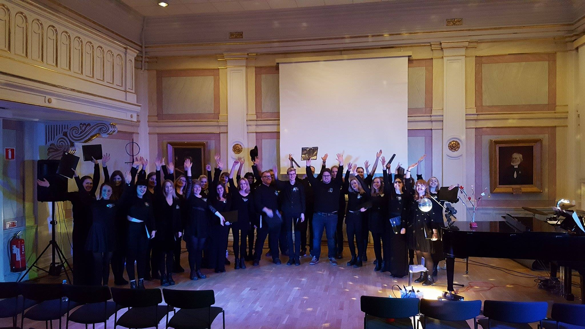

Kören
Linnékören startade hösten 2013 med syfte att berika musikintresserade människors tillvaro med körsång. Kören riktar sig främst till studenter vid Linnéuniversitetet i Växjö, men det är inte ett krav att du måste vara student för att du ska få sjunga med oss. Linnékören är en blandad kör, vilket innebär att både killar och tjejer är välkomna att vara med i kören. Att gå med i kören innebär utöver att du får sjunga härliga låtar, ett utmärkt sätt att lära känna nya människor, träffa utbytesstudenter, samt ingå i en gemenskap. Kören har även som mål att med jämna mellanrum genomföra samarbeten med andra körer, gästartister, och ensembler för att tillsammans göra gemensamma konserter.
Linnékören arbetar i projektform och därför sätts repertoaren inför varje projekt. Avsikten är att alla projekt skall utmynna i en konsert, ett framträdande, eller annan mindre sjungning. Repertoaren anpassas utifrån det projekt som kören arbetar med, och projekten kommer att vara blandade från populärmusik, rock, traditionell musik, julmusik och vårsånger, till klassisk musik för att ge kören en musikalisk bredd.
Linnékören drivs som en studiecirkel genom Studiefrämjandets studieförbund i Växjö och är religiöst och politiskt obunden. Verksamheten bedrivs som en ideell förening och är av Linnéstudenterna i Växjö godkänd studentförening.